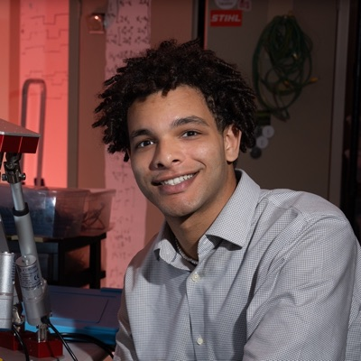
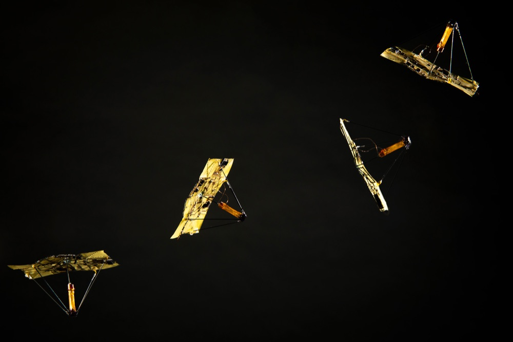

Battery-free autonomy and swarm navigation
Designing hardware and communication algorithms that let swarms of small, battery-free robots navigate on their own, with Kalman-filter state estimation informed by computer vision.

Ph.D. Student · UCLA Electrical & Computer Engineering · LEMUR Lab
I build tiny, battery-free robots that sense, move, and communicate on their own.
Explore my research Google Scholar LinkedIn GitHub CV
New Computer Vision Informed Parameter Estimation — IEEE CASE 2025Research vision
Tiny robots. No batteries. No tethers. My goal is to build microrobots that are completely self-sufficient, and to challenge what we assume they can do in the real, unstructured world.
I am a Ph.D. student in Electrical and Computer Engineering at UCLA, advised by Ankur Mehta in the Laboratory for Embedded Machines and Ubiquitous Robots (LEMUR). I am also a National GEM Consortium Fellow and a graduate researcher at MIT Lincoln Laboratory.
My research develops hardware and software for low-power, autonomous microrobots built for resource-constrained settings: battery-free onboard actuation, wireless communication, remote sensing, computer vision, and state estimation. My work has appeared in Science Robotics and IEEE CASE.
I earned my B.S. in Electrical and Computer Engineering from the University of Washington, where I built battery-free origami microfliers in Vikram Iyer's lab and designed the secure communication protocol for the UW CubeSat team's SOC-I satellite as a NASA Space Grant recipient. I care deeply about teaching, and have taught embedded systems and Python to high school students through AVELA.
Research
Designing hardware and communication algorithms that let swarms of small, battery-free robots navigate on their own, with Kalman-filter state estimation informed by computer vision.
An end-to-end vision and control stack for real-time thermal detection and autonomous UAV guidance, extended with ModalAI and transitioned to the Army Research Laboratory.
Solar-powered gliding sensor nodes whose origami bodies change shape mid-air to control how far they drift. I built the nRF52 firmware for low-power sensing and Bluetooth.
A Unity VR system for testing how people can inhabit another species' body, mapping human motion onto a physics-driven model of a Giant Pacific Octopus.

Featured · Science Robotics 2023
IEEE International Conference on Automation Science and Engineering (CASE), 2025.
Science Robotics, 2023.
DOI · arXiv · Project · Video · Data & Code
Press: UW News · Allen School News
Journey
Completed my M.S. and presented computer-vision-informed parameter estimation at IEEE CASE.
Built a real-time thermal detection and UAV guidance stack across two research appointments.
Started graduate research with Ankur Mehta; our origami microfliers were published in Science Robotics.
Bridged silicon design with firmware, verification, and SoC teams on client products.
Designed HMAC-based secure uplink/downlink messaging for the UW CubeSat team's SOC-I satellite.
Began building battery-free origami microfliers and a VR system for cross-species embodiment.
Low-power custom circuits at Dialog Semiconductor and an iOS app at FishTail Design Automation.
Concentrations in embedded computing systems and digital VLSI.
Teaching & Mentorship
Contact
I'm always happy to talk about microrobotics, embedded systems, and collaborations.